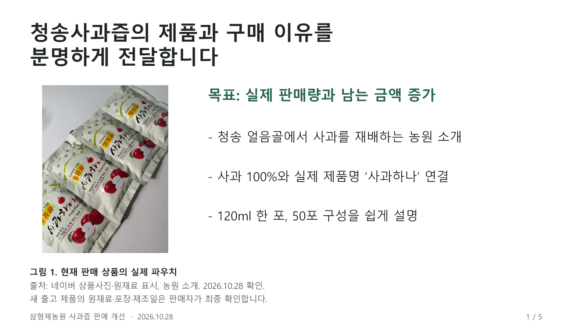
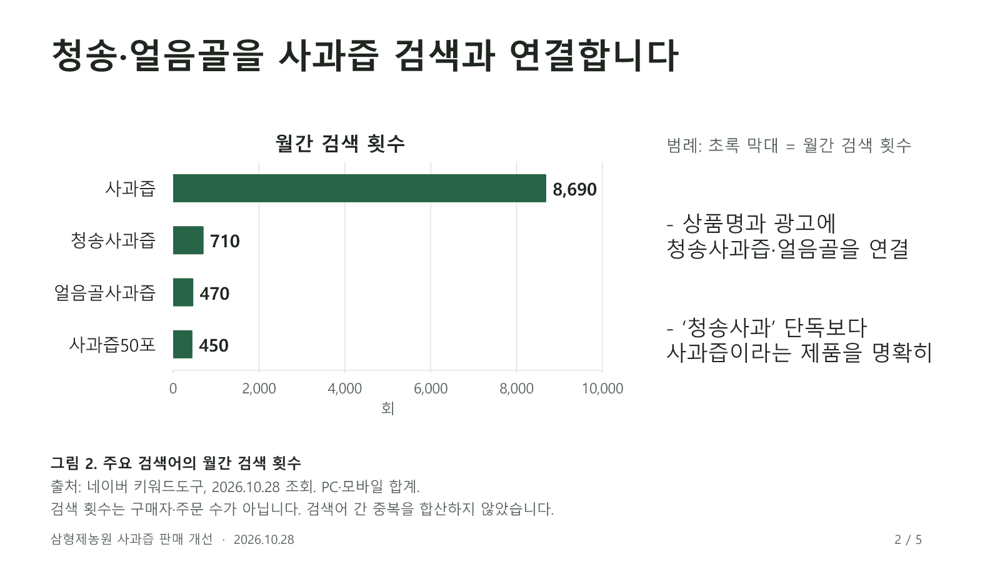
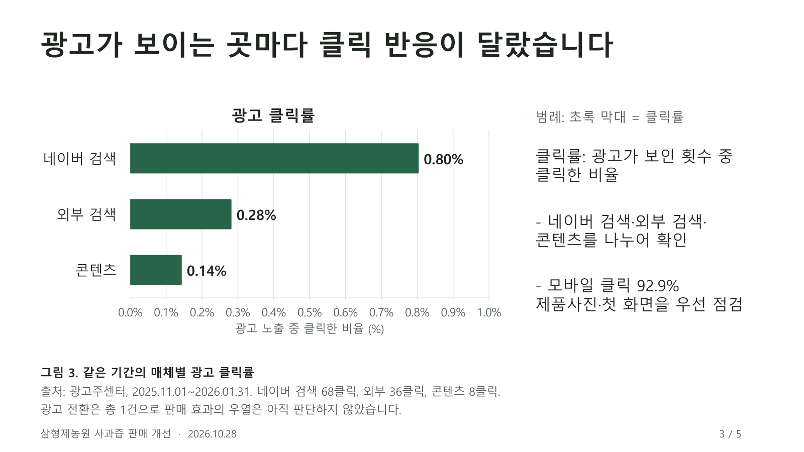
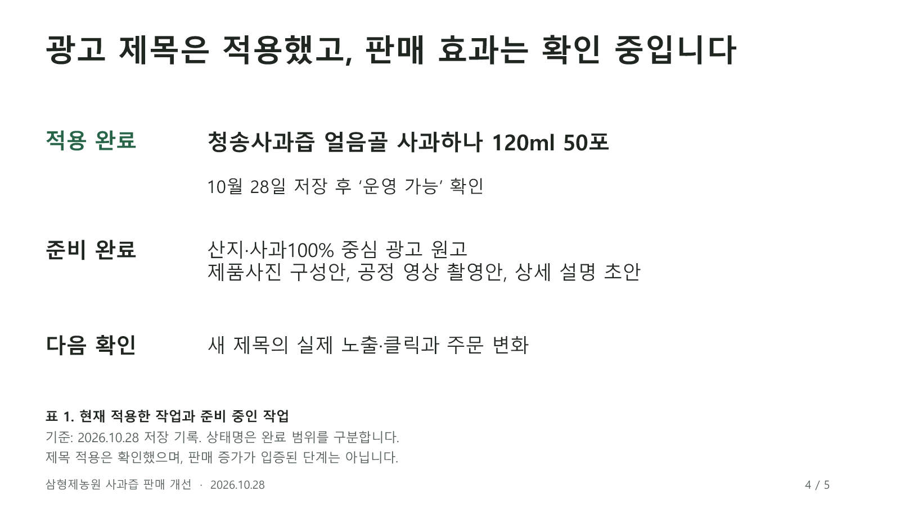
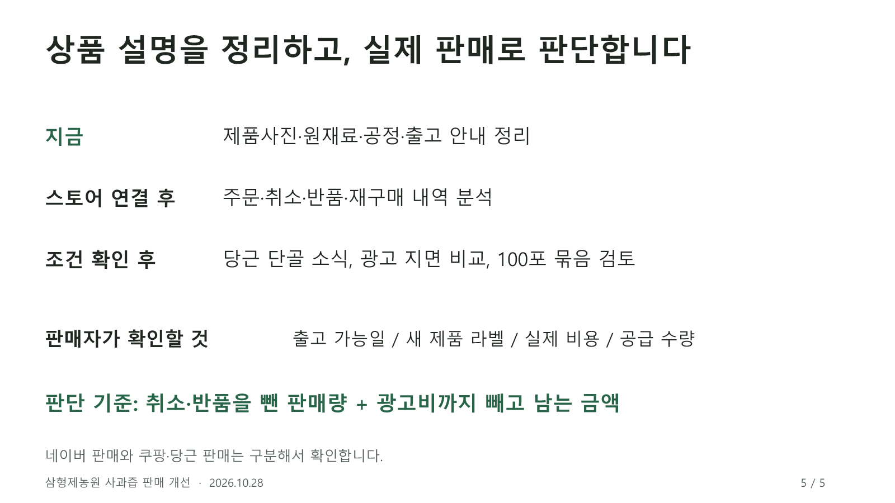

<!doctype html><html lang="ko"><meta charset="utf-8"><meta name="viewport" content="width=device-width,initial-scale=1"><title>청송사과즙 판매 개선 방향 보고서 · 5장</title><style>body{margin:0;background:white;color:#222;font-family:Malgun Gothic,sans-serif}header{padding:14px 24px;border-bottom:1px solid #ddd}a{color:#286447;margin-right:24px}main{max-width:1280px;margin:auto}img{display:block;width:100%;height:auto;margin:28px 0;border-bottom:1px solid #eee}@media print{header{display:none}img{margin:0;page-break-after:always}}</style><header><a href="청송사과즙_판매개선_방향보고서_5장.pdf">공유용 PDF</a><a href="청송사과즙_판매개선_방향보고서_5장.pptx">편집용 PowerPoint</a></header><main></main></html>